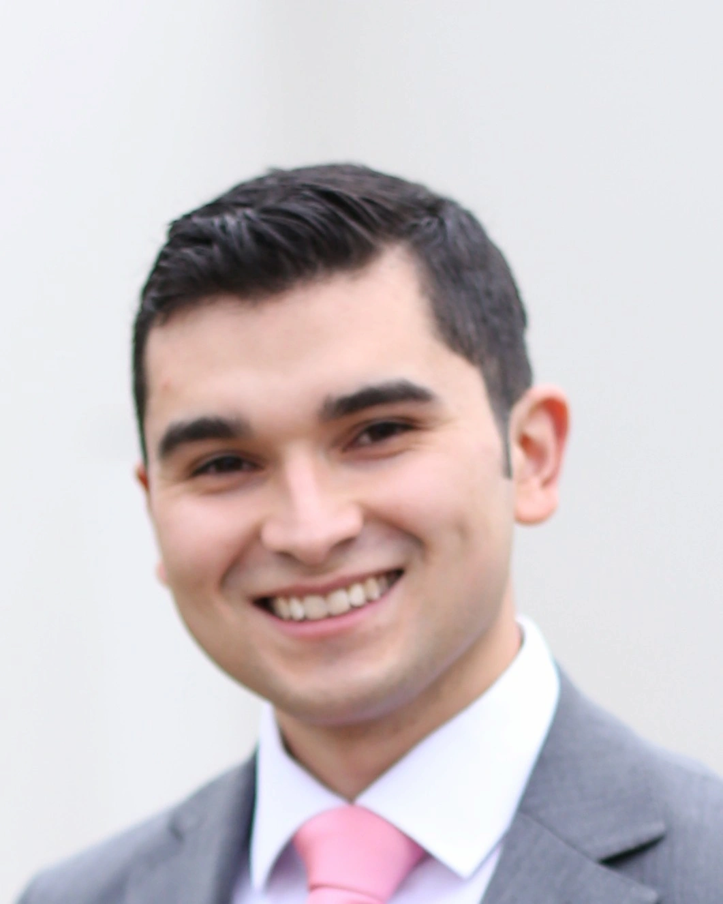

Leonardo Wilches | WDD 130

Hi, my name is Leonardo Wilches. I am from San Antonio, Chile, a coastal city and port in the center of the country. I have been married to a wonderful woman for a little over 3 years. We have a pet, a dog named Chubin. I enjoy playing video games and also enjoy nature. I am passionate about programming; I enjoy it a lot and I am excited to continue learning about web development and programming. Chile, the placed I lived have 6 temples, 3 are operational and 3 are under construction or recently announced. The closest functioning temple to San Antonio is that of Santiago, approximately an hour and a half away. Something that I really enjoy about San Antonio is that it is next to the sea, seeing how it extends and seeing its waves is something wonderful and the sunsets highlight the beauty of this place while the sun hides on the horizon.